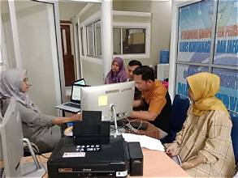

Selamat Datang di Dinas Perpustakaan dan Kearsipan Kabupaten Pesisir Selatan
Dinas Kearsipan dan Perpustakaan Kabupaten Pesisir Selatan merupakan instansi pemerintah daerah yang menyelenggarakan layanan perpustakaan umum, pembinaan literasi, serta pengelolaan arsip daerah di Kabupaten Pesisir Selatan. Instansi ini menjadi pusat layanan membaca, akses informasi, dan pembinaan tata kelola kearsipan bagi masyarakat maupun perangkat daerah.
Lihat Profil PerpustakaanKoleksi dan Fasilitas Perpustakaan
Berikut beberapa gambaran fasilitas yang mendukung kegiatan membaca, belajar, dan pencarian informasi.



Tentang Perpustakaan
Dinas Perpustakaan dan Kearsipan Kabupaten Pesisir Selatan merupakan instansi pemerintah daerah yang berperan dalam penyelenggaraan layanan perpustakaan dan pengelolaan kearsipan di Kabupaten Pesisir Selatan. Perpustakaan hadir sebagai tempat untuk memperoleh informasi, meningkatkan minat baca, serta mendukung kegiatan pendidikan dan pembelajaran masyarakat.Melalui layanan perpustakaan dan kearsipan, masyarakat dapat memperoleh akses terhadap berbagai sumber informasi dan bahan bacaan. Dinas Perpustakaan dan Kearsipan juga berupaya memberikan pelayanan yang mudah, nyaman, dan bermanfaat bagi masyarakat serta mendorong terciptanya budaya literasi di Kabupaten Pesisir Selatan.
Layanan
Perpustakaan menyediakan berbagai layanan untuk membantu pemustaka memperoleh informasi dengan mudah dan nyaman, di antaranya:
1.Layanan Sirkulasi: Peminjaman dan pengembalian koleksi perpustakaan. 2.Layanan Referensi: Membantu pemustaka menemukan sumber informasi yang sesuai. 3.Layanan Literasi Informasi: Pendampingan dalam mencari, memilih, dan mengevaluasi informasi. 4.Layanan Keanggotaan: Pendaftaran anggota perpustakaan. 5.Layanan Kearsipan: Informasi dan pelayanan terkait arsip. 6.Kegiatan Literasi: Kegiatan membaca, edukasi, dan peningkatan minat baca masyarakat.Jam Buka
Senin-Jumat: 07.30-16.00 WIB
Sabtu: TutupLokasi
Jl.H.Agus Salim No.1, Painan 25651.